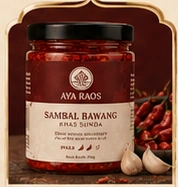
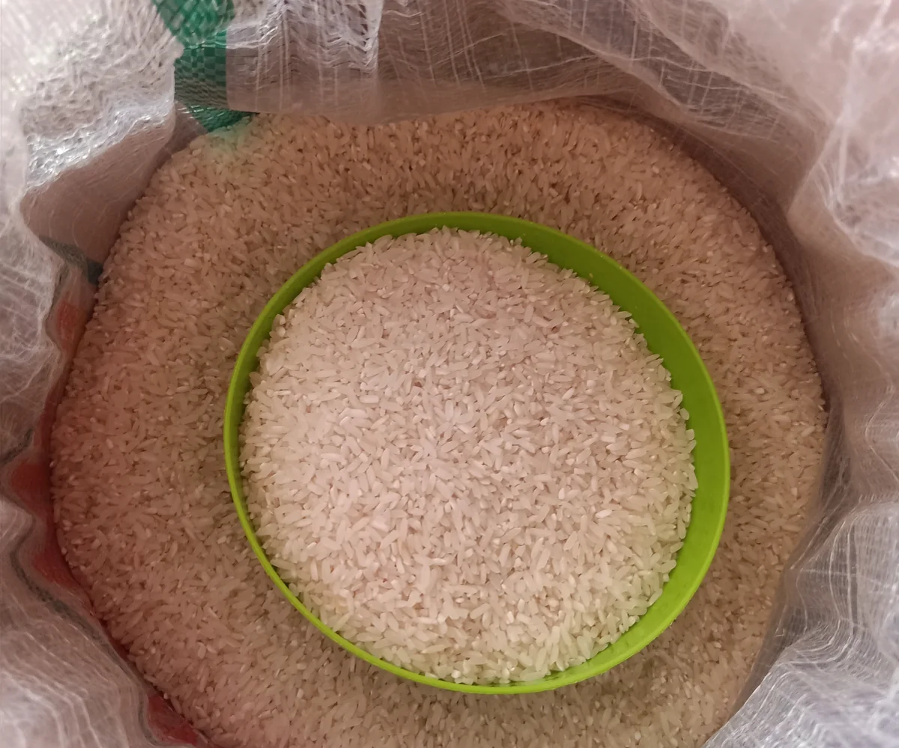
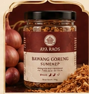

Sambal untuk restoran
Kebutuhan rutin sebagai pendamping menu atau kebutuhan operasional restoran.
Jalur ini untuk kebutuhan usaha yang berulang. Jumlah pesanan tidak menentukan segmen; hubungan dan frekuensi kebutuhan yang membedakan jalur pasokan dari pembelian satu kali.
Setelah kebutuhan dievaluasi, harga, kapasitas, spesifikasi, kemasan, pengiriman, dan ketentuan baru dibahas agar sesuai dengan kebutuhan yang nyata.

Kebutuhan rutin sebagai pendamping menu atau kebutuhan operasional restoran.

Contoh kebutuhan berulang yang perlu membahas volume, jadwal, dan spesifikasi.

Kebutuhan komersial lain yang berulang dan perlu dievaluasi berdasarkan kesiapan AYA.
Setiap kebutuhan usaha berbeda. AYA memahami konteks, kapasitas, kebutuhan operasional, dan metode pengiriman sebelum membahas kesepakatan pasokan.
Produk, penggunaan, volume, frekuensi, lokasi, dan kebutuhan khusus.
Ketersediaan bahan, kapasitas, spesifikasi, kemasan, pengiriman, dan administrasi bila relevan.
Harga dan ketentuan baru berlaku setelah disepakati kedua pihak.